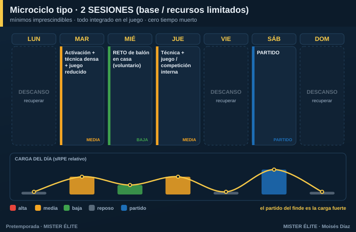

Plan · 2 SESIONES (fútbol base / recursos muy limitados)
Para quién: fútbol base, categorías con pocos recursos o solo 2 sesiones por semana. Pretemporada: 4-6 semanas suaves.
Principio rector: filosofía de mínimos imprescindibles + máximo aprovechamiento del minuto. Aquí no se persigue rendimiento físico de adulto: se prioriza técnica, táctica básica y disfrute (en base, el motor es la motivación). Todo lo físico va integrado en el juego o como retos en casa. Cero tiempo muerto.
Microciclo tipo

- Martes — activación + técnica densa (muchos contactos) + juego reducido (carga media).
- Jueves — técnica + juego / competición interna (carga media).
- Sábado — partido (la carga fuerte real de la semana).
Qué es lo mínimo imprescindible (en orden)
- Activación + técnica con muchos contactos de balón (colas cortas, mini-estaciones, alto ratio balón/jugador).
- Juego reducido como vehículo único de táctica + condición física (se entrena todo a la vez).
- Pizca de prevención lúdica (saltos, equilibrios, frenadas) integrada en el calentamiento.
Cómo aprovechar cada minuto
- Estaciones simultáneas, no esperar turnos. Que nadie esté parado.
- Calentamiento ya con balón y con contenido técnico (nada de trotar sin objetivo).
- Reglas de provocación en los juegos para que aparezca lo que quieres enseñar.
Fuerza, velocidad y prevención
Todo vía juego: saltar, frenar, arrancar, duelos. Nada de gimnasio en base. El trabajo neuromuscular se consigue jugando.
Amistosos
El partido del fin de semana ya cumple la función de carga y aprendizaje. 1 amistoso/semana es suficiente.
Deberes / trabajo autónomo
En base, los deberes son lúdicos y voluntarios, orientados a contactos de balón, no a correr: - "Reto de la semana": toques, malabares, conducción en casa, juegos con la familia.
Progresión por fases (5 semanas tipo)
| Semana | Foco | Martes | Jueves | Sábado |
|---|---|---|---|---|
| 1 | Reenganche | Técnica + juego libre | Técnica + juego reducido | Partido suave |
| 2 | Base técnica | Conducción/pase + 4v4 | Posesión + finalización | Partido |
| 3 | Táctica básica | Principios + juego de posición | Superioridades + 5v5 | Partido |
| 4 | Aplicación | Fases de juego sencillas | Competición interna | Amistoso |
| 5 | Puesta a punto | Juego + balón parado básico | Activación + partidillo | Debut |
Recordatorio para base: el objetivo no es "ponerse a tono", es reenganchar la técnica y los hábitos y que los chavales lleguen con ganas. Si disfrutan, vuelven; si vuelven, mejoran.